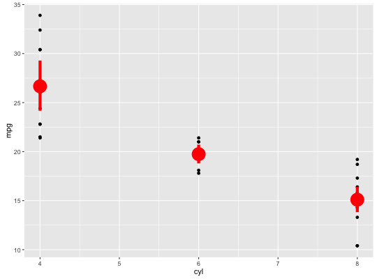
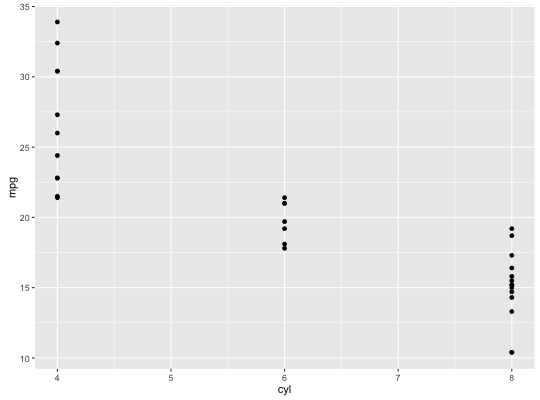
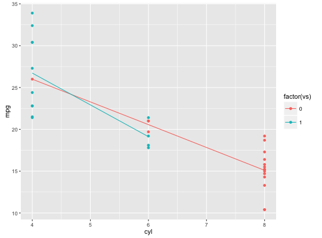
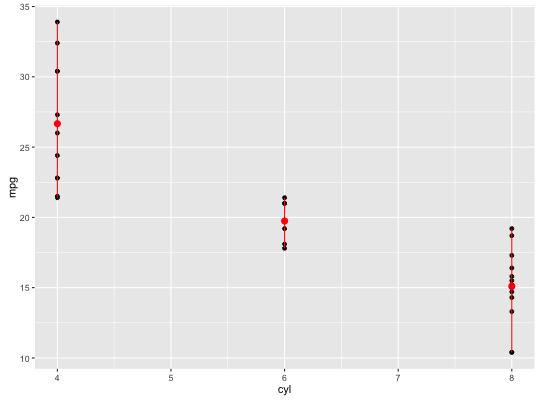
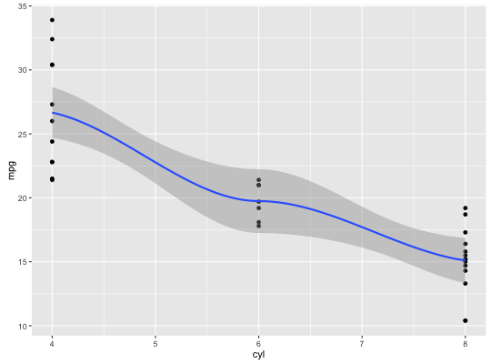
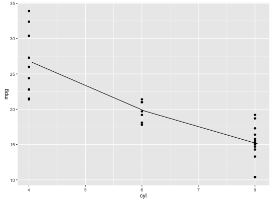
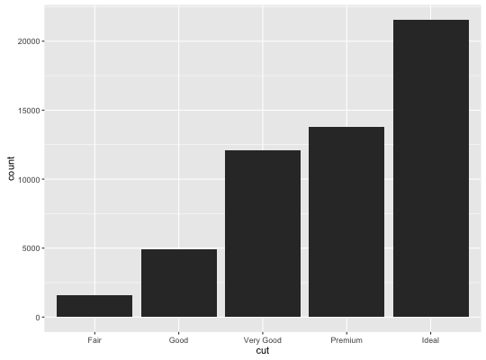
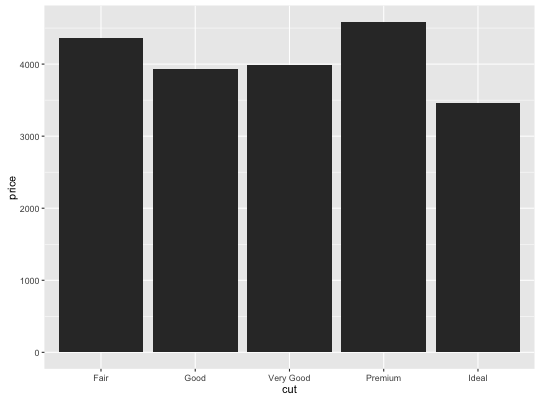
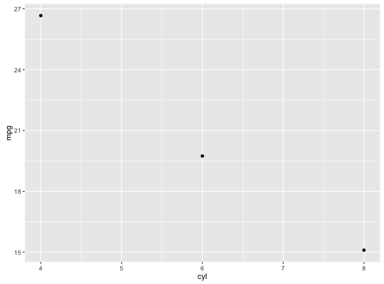
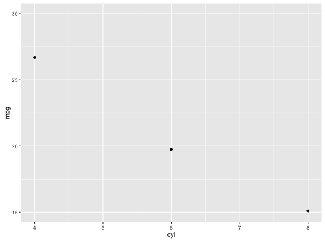

stat_summary_bin(mapping = NULL, data = NULL, geom = "pointrange", fun.data = NULL, fun.y = NULL, fun.ymax = NULL, fun.ymin = NULL, fun.args = list(), na.rm = FALSE, position = "identity", show.legend = NA, inherit.aes = TRUE, ...)stat_summary(mapping = NULL, data = NULL, geom = "pointrange", fun.data = NULL, fun.y = NULL, fun.ymax = NULL, fun.ymin = NULL, fun.args = list(), na.rm = FALSE, position = "identity", show.legend = NA, inherit.aes = TRUE, ...)
aes or
aes_. If specified and inherit.aes = TRUE (the
default), is combined with the default mapping at the top level of the
plot. You only need to supply mapping if there isn't a mapping
defined for the plot.geom_histogram/geom_freqpoly and stat_bin.ymin, y, and ymax.TRUE, silently remove missing values.NA, the default, includes if any aesthetics are mapped.
FALSE never includes, and TRUE always includes.FALSE, overrides the default aesthetics,
rather than combining with them. This is most useful for helper functions
that define both data and aesthetics and shouldn't inherit behaviour from
the default plot specification, e.g. borders.layer. There are
three types of arguments you can use here:
color = "red" or size = 3.
stat associated with the layer.
stat_summary operates on unique x; stat_summary_bin
operators on binned x. They are more flexible versions of
stat_bin: instead of just counting, the can compute any
aggregate.
stat_summary understands the following aesthetics (required aesthetics are in bold):
x
y
You can either supply summary functions individually (fun.y,
fun.ymax, fun.ymin), or as a single function (fun.data):
A simple vector function is easiest to work with as you can return a single
number, but is somewhat less flexible. If your summary function computes
multiple values at once (e.g. ymin and ymax), use fun.data.
d <- ggplot(mtcars, aes(cyl, mpg)) + geom_point() d + stat_summary(fun.data = "mean_cl_boot", colour = "red", size = 2)
# You can supply individual functions to summarise the value at # each x: d + stat_summary(fun.y = "median", colour = "red", size = 2)Warning message: Removed 3 rows containing missing values (geom_pointrange).d + stat_summary(fun.y = "mean", colour = "red", size = 2)Warning message: Removed 3 rows containing missing values (geom_pointrange).
d + aes(colour = factor(vs)) + stat_summary(fun.y = mean, geom="line")
d + stat_summary(fun.y = mean, fun.ymin = min, fun.ymax = max, colour = "red")
#' d <- ggplot(diamonds, aes(carat, price)) d + geom_smooth()Warning message: pseudoinverse used at 3.98 Warning message: neighborhood radius 4.02 Warning message: reciprocal condition number 1.0028e-16 Warning message: There are other near singularities as well. 16.16 Warning message: pseudoinverse used at 3.98 Warning message: neighborhood radius 4.02 Warning message: reciprocal condition number 1.0028e-16 Warning message: There are other near singularities as well. 16.16
d + geom_line(stat = "summary_bin", binwidth = 0.1, fun.y = "mean")
d <- ggplot(diamonds, aes(cut)) d + geom_bar()
d + stat_summary_bin(aes(y = price), fun.y = "mean", geom = "bar")
# A set of useful summary functions is provided from the Hmisc package: stat_sum_df <- function(fun, geom="crossbar", ...) { stat_summary(fun.data=fun, colour="red", geom=geom, width=0.2, ...) } # Don't use ylim to zoom into a summary plot - this throws the # data away p <- ggplot(mtcars, aes(cyl, mpg)) + stat_summary(fun.y = "mean", geom = "point") p
p + ylim(15, 30)Warning message: Removed 9 rows containing non-finite values (stat_summary).# Instead use coord_cartesian p + coord_cartesian(ylim = c(15, 30))
# The crossbar geom needs grouping to be specified when used with # a continuous x axis. d + stat_sum_df("mean_cl_boot", mapping = aes(group = cyl))Error in eval(expr, envir, enclos): object 'cyl' not foundd + stat_sum_df("mean_sdl", mapping = aes(group = cyl))Error in eval(expr, envir, enclos): object 'cyl' not foundd + stat_sum_df("mean_sdl", mult = 1, mapping = aes(group = cyl))Error: Unknown parameters: multd + stat_sum_df("median_hilow", mapping = aes(group = cyl))Error in eval(expr, envir, enclos): object 'cyl' not found# There are lots of different geoms you can use to display the summaries d + stat_sum_df("mean_cl_normal", mapping = aes(group = cyl))Error in eval(expr, envir, enclos): object 'cyl' not foundd + stat_sum_df("mean_cl_normal", geom = "errorbar")Warning message: is.na() applied to non-(list or vector) of type 'NULL' Warning message: argument is not numeric or logical: returning NA Warning message: is.na() applied to non-(list or vector) of type 'NULL' Warning message: argument is not numeric or logical: returning NA Warning message: is.na() applied to non-(list or vector) of type 'NULL' Warning message: argument is not numeric or logical: returning NA Warning message: is.na() applied to non-(list or vector) of type 'NULL' Warning message: argument is not numeric or logical: returning NA Warning message: is.na() applied to non-(list or vector) of type 'NULL' Warning message: argument is not numeric or logical: returning NA Error in seq.default(from = best$lmin, to = best$lmax, by = best$lstep): 'from' must be of length 1d + stat_sum_df("mean_cl_normal", geom = "pointrange")Error: Unknown parameters: widthd + stat_sum_df("mean_cl_normal", geom = "smooth")Error: Unknown parameters: width# Summaries are more useful with a bigger data set: mpg2 <- subset(mpg, cyl != 5L) m <- ggplot(mpg2, aes(x=cyl, y=hwy)) + geom_point() + stat_summary(fun.data = "mean_sdl", geom = "linerange", colour = "red", size = 2, mult = 1) + xlab("cyl")Error: Unknown parameters: multmError in eval(expr, envir, enclos): object 'm' not found# An example with highly skewed distributions: if (require("ggplot2movies")) { set.seed(596) mov <- movies[sample(nrow(movies), 1000), ] m2 <- ggplot(mov, aes(x= factor(round(rating)), y=votes)) + geom_point() m2 <- m2 + stat_summary(fun.data = "mean_cl_boot", geom = "crossbar", colour = "red", width = 0.3) + xlab("rating") m2 # Notice how the overplotting skews off visual perception of the mean # supplementing the raw data with summary statistics is _very_ important # Next, we'll look at votes on a log scale. # Transforming the scale means the data are transformed # first, after which statistics are computed: m2 + scale_y_log10() # Transforming the coordinate system occurs after the # statistic has been computed. This means we're calculating the summary on the raw data # and stretching the geoms onto the log scale. Compare the widths of the # standard errors. m2 + coord_trans(y="log10") }Loading required package: ggplot2movies Warning message: there is no package called ‘ggplot2movies’
geom_errorbar, geom_pointrange,
geom_linerange, geom_crossbar for geoms to
display summarised data